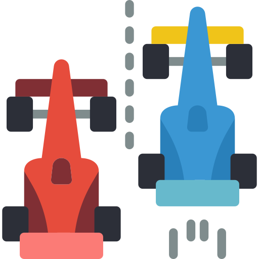

La "Formula 1" es una de las competencias mas importantes en el mundo del automovilismo, en donde compiten los mejores corredores del mundo, en donde participan 10 escuderias, cada escuderia cuenta con dos pilotos. El campeonato de Fórmula 1 comenzó en 1950 y ha evolucionado al grado de ser uno de los pocos deportes que se practica en más de 20 ciudades alrededor del mundo.
Formula 1. (2022, 15 enero). Universidad Católica San Antonio de Murcia España. Recuperado 14 de enero de 2022, de https://www.redalyc.org/pdf/1630/163024659007.pdf
¿Cuando se fundo la Formula 1?
La Formula 1 inicio en el año de 1950 en el que participaron las escuderias: Ferrari, Alfa Romeo y Maserati. Algunas fueron reemplazadas por otras nuevas como McLaren, Williams, Red Bull y otras que volvieron como Mercedes que se han alzado varias veces con el Campeonato Mundial de Constructores.
Formula 1. (2022, 15 enero). Universidad Católica San Antonio de Murcia España. Recuperado 14 de enero de 2022, de https://www.redalyc.org/pdf/1630/163024659007.pdf
Pilotos
Cada escudería compite en carrera con dos pilotos, y disponen de otros tantos probadores, aunque todas cuentan con una multitud de ingenieros, que realizan un trabajo casi tan importante como el de los pilotos.
Mercedes-AMG Petronas: Lewis Hamilton y Valtteri Bottas
Red Bull Racing Sergio Pérez y Max Verstappen
McLaren F1 Team: Daniel Ricciardo y Lando Norris
Aston Martin Cognizant:: Sebastian Vettel y Lance Stroll
Alpine F1 Team: Fernando Alonso y Esteban Ocon
Scuderia Ferrari Mission Winnow: Charles Leclerc y Carlos Sainz Jr.
AlphaTauri Honda Pierre Gasly y Yuki Tsunoda
Alfa Romeo Racing: Kimi Räikkönen y Antonio Giovinazzi
Pilotos de la F1. (s. f.). los pilotos de la F1. Recuperado 14 de enero de 2022, de https://formula1.lne.es/pilotos-f1/
¿Como se corre el gran premio de Formula 1?
Cada fin de semana la GP (Gran Premio) divide en tres partes. Los viernes a primera hora se realiza la prueba en donde checan si los automoviles no cuentan con ningun tipo de problemas, y para los pilotos hagan un reconocimiento de la pista. En el segundo día (Sabado) se realiza la clasificación, en donde los corredores lo mas rapido posible, el piloto con el tiempo recorrido mas corto sera el primero en salir de la parrilla y así sucesivamente.El tercer día (domingo) se juega la carrera.
Investigación de F1 2022
Desde el alto mando de Williams querían que Latifi dejara de pensar demasiado y se confundiera más con sus instintos de piloto. Como dijo Dave Robson, los demás en la parrilla deberían hacer lo mismo, y en Williams creen en su talento, pero quieren que 2022 sea el año en que se demuestre. Quieren mejores autos y nuevos socios para poner en práctica sus habilidades, y parece que sus opciones u oportunidades comienzan a agotarse porque dice que cree que todavía es posible. Veremos de lo que es capaz el canadiense y si eso ayuda o es lo que Williams quiere ver.
"Creo que este año fue un poco más alto y más bajo de lo que esperábamos. Como equipo con Nicky, oscilamos entre la calificación y el ritmo de la carrera, pero todavía tiene mucho talento para conducir el auto, entender y articular problemas". Obviamente, el próximo año será un reinicio masivo. El auto es completamente diferente y también lo es el nuevo compañero de equipo, así que creo que el próximo año tiene la oportunidad de brillar realmente. Creo que todavía tengo la oportunidad de hacerlo".
Deportes extremos
10/02/2022
Paracaidsimo
Es la técnica de lanzamiento de seres humanos desde cierta altura y se usa un paracaídas que amortigua el aterrizaje.La edad mínima para hacer el salto es de 7 años. Por supuesto, los menores de edad podrán saltar en paracaídas con la autorización por escrito de sus representantes legales en nuestros formularios. El peso límite para saltar es de 105 kilos (incluyendo calzado y vestido).
Bungee jumping
Las personas se avientan desde cientos de metros de altura, atados con una cuerda elástica en los pies.Según la publicación, durante el salto el incremento repentino y la presión intratorácica puede causar un rápido aumento de la presión venosa dentro del ojo y la ruptura espontánea de capilares superficiales de la retina, lo que genera una hemorragia con graves consecuencias .
Motocross
El objetivo es realizar circuitos con saltos en cualquier espacio. El motocross es una modalidad de motociclismo que consiste en competir por circuitos caracterizados por ser terrenos agrestes; los cuales se distinguen por ser circuitos definidos y marcados, poniendo a prueba, no sólo la motocicleta y su velocidad, sino su destreza al momento de controlar la máquina
 ¿Como es la Formula 1?
¿Como es la Formula 1?